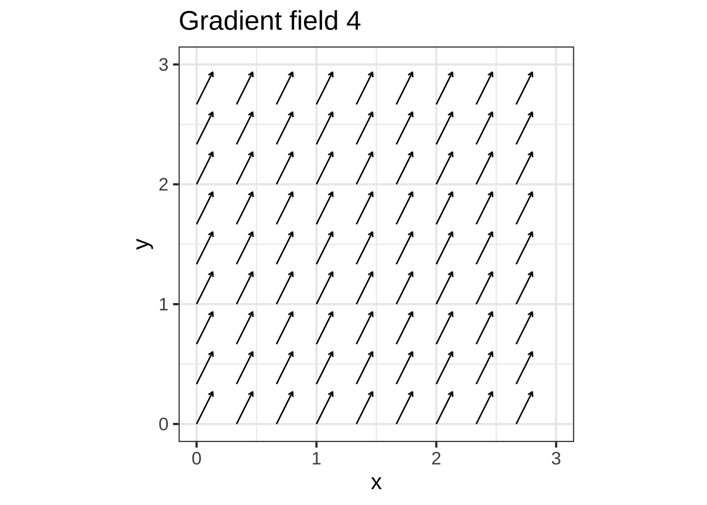

16 Change relationships
The questions that started it all had to do with motion. There were words to describe speed: fast and slow. There were words to describe force: strong and weak, heavy and light. And there were words to describe location and distance: far and near, long and short, here and there. But what were the relationships among these things? And how did time fit in, an intangible quantity that had aspects of location (long and short) and of speed (quick and slow)?
Galileo (1564-1642) started the ball rolling. As the son of a musician and music theorist, he had a sense of musical time, a steady beat of intervals. When a student of medicine in Pisa, he noted that swinging pendulums kept reliable time, regardless of the amplitude of their swing. After accidentally attending a lecture on geometry, he turned to mathematics and natural philosophy. Inventing the telescope, his observations put him on a collision course with the accepted classical truth about the nature of the planets. Seeking to understand gravity, he built an apparatus that enabled him to measure accurately the position in time of a ball rolling down a straight ramp. The belled gates he set up to mark the ball’s passage were spaced arithmetically in musical time: 1, 2, 3, 4, …. But the distance between the gates was geometric: 1, 4, 9, 16, …. Thus he established a mathematical relationship between increments in time and increments in position. Time advanced as 1, 1, 1, 1, … and position as 1, 3, 5, 7, …. He observed that the second increments of position, the increments of the increments 1, 3, 5, 7, …, were themselves evenly spaced: 2, 2, 2, ….
Putting these observations in tabular form, and adding columns for the
- first increment \(y(t) \equiv x(t+1) - x(t)\) and the
- second increment \(y(t+1) - y(t)\)
| \(t\) | \(x(t)\) | first increment | second increment |
|---|---|---|---|
| 0 | 0 | 1 | 2 |
| 1 | 1 | 3 | 2 |
| 2 | 4 | 5 | 2 |
| 3 | 9 | 7 | |
| 4 | 16 |
Galileo had neither the mathematics nor the equipment to measure motion continuously in time. So what might be obvious to us now, that position is a function of time \(x(t)\), would have had little practical significance to him. But we discover in his first increments of \(x\) something very much like the slope function in Chapter ??.
\[{\cal D}_t\, x(t) \equiv \frac{x(t + 1) - x(t)}{1}\] From his data, he observed that \({\cal D}_t\, x(t)\) increases linearly in \(t\): \[{\cal D}_t x(t) = 2 t + 1\]
Calculating the second increments of \(x\) is done by the “slope function of the slope function,” which we can call \({\cal D}_{tt}\): \[{\cal D}_{tt} x \equiv {\cal D}_t \left[{\cal D}_t x(t)\right] = 2(t+1) + 1 - (2 t + 1) = 2\] ## Continuous time
Newton considered the problem for continuous time rather than Galileo’s discrete time. He reframed the slope function from the big increments of the slope operator \({\cal D}_t\) to imagined vanishingly small increments of a operator that we shall denote \(\partial_t\) and call differentiation.
The kind of question for which Newton wanted to be able to calculate the answer was, “How to find the function \(x(t)\) whose second increment, \(\partial_{tt} x(t) = 2\)?” His approach, which he called the “method of fluxions,” became so important that its name became, simply, “Calculus.”
Over the next three centuries, calculus evolved from a set of techniques for describing motion into the general-purpose mathematics of change. Applying calculus in the real world involves understanding change relationships between quantities. To give some examples:
- Electrical power is the change with respect to time of electrical energy.
- Birth rate is one component of the change with respect to time of population.
- Interest, as in bank interest or credit card interest, is the change with repect to time of assets.
- Inflation is the change with respect to time of prices.
- Disease incidence is one component of the change with respect to time of disease prevalence.
- Force is the change with respect to position of energy.
Each question involves a pair of quantities that are a function of time and that might or might not be a quantity/rate-of-change pair. If they are, say which quantity is which. Feel free to look up a dictionary definition of words you are uncertain about.
Question A Deficit and debt
- Deficit is the rate of change of debt with respect to time. ✓
- Debt is the rate of change of deficit with respect to time. ☹︎
- They are not a rate of change pair. ☹︎
Question B water contained and flow
- Flow is the rate of change of water contained with respect to time. ✓
- Water contained is the rate of change of flow with respect to time. ☹︎
- They are not a rate of change pair. ☹︎
Question C Interest rate and debt owed on credit card
- Interest rate is the rate of change of credit card debut with respect to time. ✓
- Credit card debut is the rate of change of interest rate with respect to time. ☹︎
- They are not a rate of change pair. ☹︎
Question D Rain intensity and total rainfall
- Rain intensity is the rate of change of total rainfall with respect to time. ✓
- Total rainfall is the rate of change of rain intensity with respect to time. ☹︎
- They are not a rate of change pair. ☹︎
Question E Force and acceleration
- Force is the rate of change of acceleration with respect to time. ☹︎
- Acceleration is the rate of change of force with respect to time. ☹︎
- They are not a rate of change pair. ✓ The dimension of force is \(ML/T^2\). The dimension of acceleration is \(L/T^2\). A rate of change with respect to time should have an extra T in the denominator of the dimensions.
Question F Position and acceleration
- Position is the rate of change of acceleration with repect to time. ☹︎
- Acceleration is the rate of change of position with respect to time. ☹︎
- They are not a rate of change pair. ✓ The dimension of position is \(L\). The dimension of acceleration is \(L/T^2\). The rate of change of position would have dimension \(L/T\). That’s called ‘velocity.’
Question G Velocity and air resistence
- Velocity is the rate of change of air resistence with repect to time. ☹︎
- Air resistence is the rate of change of velocity with respect to time. ☹︎
- They are not a rate of change pair. ✓ Air resistence is a force, with dimension \(M L/T^2\). Velocity has dimension \(L/T\). The rate of change of velocity with respect to time is acceleration, which has dimension \(L/T^2\).
16.1 Slopes and motion
Chapter 9.6 introduced the idea of a slope function: a function \(g(t)\) whose value at each instant gives the instantaneous rate of change of a partner function \(f(t)\). To keep easier track of the relationship between the function and it’s slope function, we use the \({\cal D}\) notation: \[{\cal}D_t f(t)\] is the slope function of \(f(t)\) with respect to \(t\).
To illustrate, imagine a graph of the position of a car along a road as in Figure 16.1. Over the course of an hour, the car traveled about 25 miles. In other words, the average speed is 25 miles/hour: the slope of the red line segment. Given the traffic, sometimes the car was stopped (time C), sometimes crawling (time D) and sometimes much faster than average (time B).

Figure 16.1: The position of an imagined car over an hour of time. (black) The red line shows what the position would have been if the car had travelled steadily at the average speed for the hour.
Of course, when you’re driving you are aware of the car’s speed at any instant. You need only look at the speedometer to read off the value (in miles per hour). Speedometers don’t show the average speed for the entire trip. The average speed is the slope of the red line in Figure @ref(fig:stop-and-go2}, 25 miles in one hour, usually stated 25 miles-per-hour.
In terms of Figure @ref(fig:stop-and-go2}, the speedometer reading is the slope of \(f(t)\) at the given instant. You can see from the Figure that at instant A the speed is very close to the average speed for the entire trip. At instant B the car is going faster; the slope is much steeper. On the other hand, at instant C the car is at a standstill; its position doesn’t change at all.
The car’s speedometer shows the speed at each moment—or instant—of the trip. As you can see in Figure @ref{fig:stop-and-go}, the speed varies and is sometimes less than the average speed, sometimes greater, and occasionally equal to the average speed over the trip.
Although you can easily judge whether the instantaneous speed is faster or slower than the average speed, quantifying the speed requires some work: calculating the slope of the tangent line.
Far easier to have this job done for us. The means to do so is to compute the slope function of \(f()\), that is, \({\cal D}_tf()\). Figure 16.2 shows \({\cal D}_tf()\) directly.
You can read off the speed from the graph at any instant simply by reference to the vertical axis.

Figure 16.2: The instantaneous velocity of the car whose position vs time is shown in Figure 16.1.
The two graphs in Figures ?? and 16.2 show exactly the same car trip. The presentation of the data in the different graphs makes it easy to see some things and hard to see others. For instance, figuring out when the car is at a stand-still is harder in the position-vs-time graph than in the speed-vs-time graph.
Having worked out a theory of slope functions, Newton was ready to express the laws of motion in continuous time. He did this by denoting position as \(x(t)\). The familiar concepts of velocity and force could then be defined in terms of slope functions of position and the “quantity of matter,” which we call “mass.”
- Velocity is the slope function of position: \(v(t) \equiv {\cal D}_t x(t)\).
- Net force is the slope function of velocity times mass: \(F(t) \equiv m {\cal D}_t v(t)\)
To take mass out of the formulation, we give a name specifically to the slope function of velocity; we call it acceleration.
- Acceleration is the slope function of velocity: \(a(t) \equiv {\cal D}_t v(t)\).
With acceleration as a concept, we can define net force as mass times acceleration. This is better known as Newton’s Second Law of Motion.
We used net force as the quantity we related to mass and the slope function of velocity. There are different sources of forces which add up and can cancel out. Famously, Newton formulated the law of universal gravitation which ascribed the force between masses as proportional to the product of the two masses and inversely proportional to the square of the distance between them. But a mass on a table has no net force on it, since the table pushes back (push = force) on the mass to cancel out the force due to gravity. “Net force” takes such cancellation into account.
16.2 Differentiation
Two central operations in calculus are:
- Given a function \(f(t)\), find the function \(\partial_t\,f(t)\) giving the instantaneous rate of change of \(f()\). This process of deriving \(\partial_t\, (t)\) from \(f(t)\) is called differentiation.
- Given a function \(\partial_t\,(t)\), find the \(f(t)\) of which \(\partial_t\,f(t)\) is the instantaneous rate of change. This process of finding \(f()\) given \(\partial_t\,f()\) is called anti-differentiation.
Notice that in (1) and (2) above we didn’t use the \({\cal D}_t\) notation. It’s time to switch away from that. What prompts the change is the nuisance of the constant 0.1 in the definition of the slope function: \[{\cal D}_t f(t) \equiv \frac{f(t+0.1) - f(t)}{0.1}\]
Whereas the slope function \({\cal D}_t f(t)\) gives an approximation to the instantaneous rate of change, \(\partial_t f(t)\) refers to the instantaneous rate of change exactly.
We’ll come back to the relationship between \({\cal D}_t\) and \(\partial_t\) in Chapter 20. It’s a subject of particular interest to mathematicians, hence a central part of traditional calculus texts (which are mostly written by mathematicians). For modeling and other applications of calculus, it is something of a side issue.
As an intermediate step on the path between \({\cal D}_t\) and \(\partial_t\), let’s redefine the slope function to eliminate the 0.1 and replace it with a parameter \(h\): \[{\cal D}_x f(x) \equiv \frac{f(x+h) - f(x)}{h}\] This way of writing the slope function will enable us to consider how the slope function changes as \(h\) gets smaller and smaller.
16.3 Notations for differentiation
There are several traditional notations for differentiation of a function named \(f()\). For instance:
- Leibnitz: \(\frac{df}{dx}\)
- Partial: \(\frac{\partial f}{\partial x}\)
- Euler: \(D_x f\)
- One-line: \(\partial_x f\) (a hybrid of partial and Euler notation.)
- Newton (or “dot”): \(\dot{f}\)
- Lagrange (or “prime”): \(f'\)
In this book, we will mainly use the one-line notation, \(\partial_x f\), but it means exactly the same as the Leibnitz and Partial notations, which are much more widely used in textbooks.
If you’ve studied calculus before, you have likely seen the \(f'\) notation. This is admirably concise but is only viable in a narrow circumstance: functions that take a single input. What \(f'\) leaves out is a means to specify a crucial aspect of differentiation, the with-respect-to variable. The general situation for differentiation involves functions of one or more variables, for example, \(g(x, y, z)\). For such functions, you need to specify which is the with-respect-to variable. For instance, we can differentiate \(g()\) three different ways, each way incrementing one or another of the three inputs:
\[\partial_z g(x, y, z) \equiv \frac{g(x, y, z+h) - g(x, y, z)}{h}\\ \ \\ \partial_x g(x, y, z) \equiv \frac{g(x+h, y, z) - g(x, y, z)}{h}\\ \ \\ \partial_y g(x, y, z) \equiv \frac{g(x, y+h, z) - g(x, y, z)}{h}\]
At this point in your studies, you haven’t seen why you might choose to differentiate a function with respect to one variable or another. That will come in time. But we want to set you up with notation that won’t narrow your options.
Both the Leibnitz and Partial notations are explicit in identifying the function and the with-respect-to-variable. For example, using the Partial differentiation notation, the three ways of differentiating our example function \(g(x, y, z)\) are labeled :
\[\frac{\partial f}{\partial x},\ \ \ \frac{\partial f}{\partial y},\ \ \text{and}\ \ \frac{\partial f}{\partial z}\]
Our R/mosaic computer differentiation is longer but explicit:
The names being used here are arbitrary; you can use any names you like. What’s nice about dx_g and the others is that it mimics the math notation \(\partial_x g()\).
Notice that the R/mosaic operator for differentiation is named D() and that it is a function. It follows the same pattern as makeFun() or slice_plot() or contour_plot(): the first argument is a tilde expression, for instance g(x, y, z) ~ x, which identifies the mathematical function to work with (g()) and the name of the with-respect-to input to that function. The R/mosaic notation makes it clear that differentiation is an operation on a function. The D() operator takes a function as input and produces as output another function. We’ve seen similar behavior with, say, slice_plot(), which takes a function as input and produces graphics as output. Both D() and slice_plot() need to know the identity of the with-respect-to variable as well as the function to work with. What’s why both pieces of input are packaged into a tilde expression.
We’re calling D() an operator rather than a function. The reason is purely for communication with other people. There are so many “functions” in a calculus course that we thought it would be helpful to distinguish between the kinds of functions that take quantities as input and produce a quantity as output, and the functions that take a function as input and produce a function as output. Both sorts are called “functions” in R terminology. But a sentence like, “Differentiation is a function that takes a function as input and produces a function as output,” true though it be, is dizzying.
It is a fact of mathematical and scientific life that a variety of notations are used for differentiation. To some extent, this reflects historical precedence and, to be honest, nationalistic European politics of the 18th century. To make sense of mathematical writing in the many areas in which calculus is used, you have to recognize all of them for what they are. Your skill will be enhanced if you also memorize the names of the different styles. It’s not all that different from the pattern in English of having multiple words for the same sort of object, for instance: car, automobile, junker, ride, wheels, crate, jalopy, limo, motor car, horseless carriage.
In the days when carriages where pulled by horses, the phrase “horseless carriage” made a useful distinction. Today, when horses are rarely seen on the road, it make sense to trim down the notation to its essentials: horseless cariage. Think of \(\partial_x\) as this sort of minificat
ion of older notations.18
Recall that a function is monotonically increasing on a given domain when the function’s slope is positive everywhere in that domain. A monotonically decreasing function, similarly, as a negative slope everywhere in the domain. When the slope is zero, or positive in some places and negative in others, the function is neither monotonically increasing or decreasing.
Each of the following graphs shows the derivative of some function \(f(x)\). (Note: the graph doesn’t show \(f()\) but rather the function \(\partial_x f()\) which is the derivative of \(f()\).) For each graph, say whether the function \(f()\) is monotonically increasing, monotonically decreasing, or neither. (Note that the horizontal scale is the same in every graph, but the vertical scale can be different from one scale to another.)


Question A Function A is …
- monotonically increasing ✓ A monotonically increasing function has a function that is everywhere \(> 0\)
- monotonically decreasing ☹︎ A monotonically increasing function has a function that is everywhere \(> 0\)
- constant ☹︎ A constant function has a derivative that is everywhere 0.
- non-monotonic ☹︎ A non-monotonic function goes up and down, hence the derivative is positive in some places and negative in others.
- Can’t tell from the info provided ☹︎ This is the case if you cannot tell if the derivative is positive or negative.
Question B Function B is …
monotonically increasing ☹︎ A monotonically increasing function has a function that is everywhere \(> 0\)
monotonically decreasing ✓ A monotonically increasing function has a function that is everywhere \(> 0\)
constant ☹︎ A constant function has a derivative that is everywhere 0.
non-monotonic ☹︎ A non-monotonic function goes up and down, hence the derivative is positive in some places and negative in others.
Can’t tell from the info provided ☹︎ This is the case if you cannot tell if the derivative is positive or negative. Question C Function C is …
monotonically increasing ☹︎ A monotonically increasing function has a function that is everywhere \(> 0\)
monotonically decreasing ☹︎ A monotonically increasing function has a function that is everywhere \(> 0\)
constant ☹︎ A constant function has a derivative that is everywhere 0.
non-monotonic ✓ A non-monotonic function goes up and down, hence the derivative is positive in some places and negative in others.
Can’t tell from the info provided ☹︎ This is the case if you cannot tell if the derivative is positive or negative. Question D Function D is …
monotonically increasing ✓ A monotonically increasing function has a function that is everywhere \(> 0\)
monotonically decreasing ☹︎ A monotonically increasing function has a function that is everywhere \(> 0\)
constant ☹︎ A constant function has a derivative that is everywhere 0.
non-monotonic ☹︎ A non-monotonic function goes up and down, hence the derivative is positive in some places and negative in others.
Can’t tell from the info provided ☹︎ This is the case if you cannot tell if the derivative is positive or negative. Question E Function E is …
monotonically increasing ☹︎ A monotonically increasing function has a function that is everywhere \(> 0\)
monotonically decreasing ☹︎ A monotonically increasing function has a function that is everywhere \(> 0\)
constant ☹︎ A constant function has a derivative that is everywhere 0.
non-monotonic ☹︎ A non-monotonic function goes up and down, hence the derivative is positive in some places and negative in others.
Can’t tell from the info provided ✓ This is the case if you cannot tell if the derivative is positive or negative. Question F Function F is …
monotonically increasing ✓ A monotonically increasing function has a function that is everywhere \(> 0\)
monotonically decreasing ☹︎ A monotonically increasing function has a function that is everywhere \(> 0\)
constant ☹︎ A constant function has a derivative that is everywhere 0.
non-monotonic ☹︎ A non-monotonic function goes up and down, hence the derivative is positive in some places and negative in others.
-
Can’t tell from the info provided ☹︎ This is the case if you cannot tell if the derivative is positive or negative.
Here are graphs of various functions. The right column shows functions named \(f_1()\), \(f_2()\), and so on. The left column shows functions \(A()\), \(B()\), \(C()\), and so on. Most of the functions on the right are the derivative of some function on the left, and most of the functions on the left have their corresponding derivative on the right. Your task: Match the function on the left to it’s derivative on the right.



Question A The derivative of Function A() is which of the following:
f1() ☹︎ f2() ✓ f3() ☹︎ f4() ☹︎ not shown ☹︎
Question B The derivative of Function B() is which of the following:
f1() ✓ f2() ☹︎ f3() ☹︎ f4() ☹︎ not shown ☹︎
Question C The derivative of Function C() is which of the following:
f1() ☹︎ f2() ☹︎ f3() ☹︎ f4() ✓ not shown ☹︎
Question D The derivative of Function D() is which of the following:
f1() ☹︎ f2() ☹︎ f3() ☹︎ f4() ☹︎ not shown ✓
The left column of graphs shows functions A(), B(), C(), and D(). The right column shows functions dd1(), dd2(), and so on. Find which function (if any) in the right column corresponds to the 2nd derivative of a function in the left column.
Remember the concepts of “concave up” (a smile!) and “concave down” (a frown). At those values of \(x\) for which the 2nd derivative of a given function is positive, the given function will be concave up. When the 2nd derivative is negative, the given function will be concave down.


Question A The second derivative of Function A() is which of the following:
dd1() ☹︎ dd2() ☹︎ dd3() ☹︎ dd4() ✓ not shown ☹︎
Question B The second derivative of Function B() is which of the following:
dd1() ☹︎ dd2() ✓ dd3() ☹︎ dd4() ☹︎ not shown ☹︎
Question C The second derivative of Function C() is which of the following:
dd1() ☹︎ dd2() ☹︎ dd3() ☹︎ dd4() ☹︎ not shown ✓
Question D The second derivative of Function D() is which of the following:
dd1() ✓ dd2() ☹︎ dd3() ☹︎ dd4() ☹︎ not shown ☹︎
16.4 Dimension of derivatives
Recall that the differencing operator takes as input a function and returns as output another function that takes the same kind of input, but produces a different kind of output.
For instance, suppose the function pressure() takes an altitude as input (in km) and returns as output a pressure (in kPa, “kiloPascal”19).
The derivative function, let’s call it d_pressure(), also takes an input in km, but produces an output in kPA per km: a rate.
You can see this by examining the differencing operator itself:
\[{\cal D}_x f(x) \equiv \frac{f(x+h) - f(x)}{h}\]
Remember the notation for dimensions. A quantity \(x\) has dimensions denoted as \([x]\). (This is nothing more than saying, “Pronounce ‘\([x]\)’ as ‘the dimensions of \(x\).’”) The input to \(f()\) has dimension \([x]\). The output from \(f()\) has dimension \([f(x)]\).
What is the dimension of \(h\)? (We could write this question more simply, "What is \([h]\)?) Since the operator adds \(x + h\), it must be that \([h] = [x]\). Otherwise, addition wouldn’t be a viable operation to combine the two quantities.
What is the dimension of \(f(x + h) - f(x)\)? (Again, we could ask this more simply, “What is \([f(x+h) - f(x)]\)?”) Since we’re subtracting two quantities, the two quantities must have the same dimension and the result is also that dimension. So \([f(x+h) - f(x)] = [f(x)]\).
The output of the function \(df(x)\) produced by \(\mbox{Diff}(f)\) therefore has dimension \([f(x)] / [x]\).
A. The given function is \(N(y)\), the population of the Netherlands in year \(y\).
- Dimension of input to \(N(y)\)?
- Dimension of output from \(N(y)\)?
- Dimension of input to \(\partial_y N(y)\)?
- Dimension of output from \(\partial_y N(y)\)?
B. The given function is \(p(u)\), the net profit from a manufactured good as a function of the number of units manufactured.
- Dimension of input to \(p(u)\)?
- Dimension of output from \(p(u)\)?
- Dimension of input to \(\partial_u p(u)\)?
- Dimension of output from \(\partial_u p(u)\)?
C. The given function is \(w(t)\), the amount of water in a leaky bucket at any time after the bucket was filled.
- Dimension of input to \(w(t)\)?
- Dimension of output from \(w(t)\)?
- Dimension of input to \(\partial_t w(t)\)?
- Dimension of output from \(\partial_t w(t)\)?
Question A Tanks for bulk storage of natural gas are typically large cylinders with a cap that can more up and down. The volume of the tank is a function of the position of the cap. What is the dimension of the derivative of cylinder volume with respect to cap position?
\(L^2\) ✓ \(L\) ☹︎ \(L^3\) ☹︎ \(L^3/T\) ☹︎ \(T/L^3\) ☹︎
The standard model of epidemics used in public health planning is called the SIR model. (SIR stands for “Susceptible (S), Infective (I), Recovered (R),” the sequence that a person starts in, moves to, and ends up in (hopefully!) in an epidemic.)
One of the equations in the SIR model is \[\frac{dS}{dt} = -a S I\]
The notation \(dS/dt\) means “the rate of change of number of susceptibles, S, with respect to time.” This has dimension “people/T.” The dimensions \([S]\) and \([I]\) are each simply “people.”
Question A What is \([a]\)?
- T ☹︎
- T\(^{-1}\) ☹︎
- people/T ☹︎ Then \([a S I]\) would be people\(^3\)/T, but that’s not the same as \([dS/dt]\).
- people\(^{-1}\) T\(^{-1}\) ✓ This correctly gives \([a S I]\) as people/T, which is the same as \([dS/dt]\).
- people \(\times\) T ☹︎
- None of the above. ☹︎
Exercise 57 refers to a second equation of the SIR model
\[\frac{dI}{dt} = - a S I - b I\] where \([\frac{dI}{dt}] =\) people/T.
Question B What is \([b]\)?
- T ☹︎
- T\(^{-1}\) ✓
- people/T ☹︎ Then \([a S I]\) would be people\(^3\)/T, but that’s not the same as \([dS/dt]\).
- people\(^{-1}\) T\(^{-1}\) ☹︎ If this were true, \([bI]\) would be T\(^{-1}\). But \([bI]\) has to be the same as \([dI/dt]\), which is people \(T^{-1}\).
- people \(\times\) T ☹︎
- None of the above. ☹︎
16.5 Visualizing the slope function
The function produced by the differencing operation \[{\cal D}_x f(x) \equiv \frac{f(x+h) - f(x)}{h}\] is in every way an ordinary function that takes an input and produces an output.
Ordinarily, we visualize functions of one variable by drawing a graph. This technique is every bit as applicable to functions produced by \(\diff{x}\) as to any other function.
The input to a slope function \(\diff{x} f(x)\) is exactly the same as the input to the mother function \(f(x)\). So a graph of the slope function will have the same horizontal axis as a graph of the mother function. However, the output of \(\diff{x} f(x)\) is a different kind of thing than the output of \(f(x)\).
Suppose, for instance, that we have a mother function \(T(x)\) giving atmospheric temperature at a location on Earth as a function of altitude \(x\). The output of \(T(x)\) has, as you would expect, the dimension of temperature with units of, say, degrees C. But the output of \(\diff{x} T(x)\) has a different dimension: temperature divided by altitude with units of, say, degrees C per km.
The different dimensions of the output of a function and the output of its slope fun means that the vertical axis for graphing \(\diff{x} f(x)\) must be different from the vertical axis used for graphing \(f(x)\). Thus, in general, \(\diff{x} f(x)\) and \(f(x)\) cannot be graphed in the same frame.
This requirement to use different graphics frames for \(f(x)\) and \(\diff{x}f(x)\) makes it somewhat difficult to visualize the relationship between \(f(x)\) and \(\diff{x}f(x)\).
Let’s explore a non-standard way to visualize \(\diff{x}f(x)\) that can be shown in the same graphics frame as the graph of \(f(x)\). Perhaps this non-standard visualization will give you a better way to understand slope functions. If so, good. The ultimate benefit of a way to show \(\diff{x} f(x)\) and \(f(x)\) in the same frame will come when we introduce the operation of anti-differentiation.
Recall that the basic model of change in Calculus is the straight-line function \(\line(x) \equiv a x + b\). The slope \(a\) of \(\line(x)\) tells how the output changes for a unit change in input. In differentiation, we
- approximate the mother function \(f(x)\) as a series of local line segments.
- extract the slope of each line segment as the value of the slope function at each input \(x\).
Figure 16.3 shows the segment by segment approximation around each of several input values (marked in green). The slope function visualization is constructed by throwing away the vertical offset of each of the line segments and plotting them horizontally adjacent to one another.

Figure 16.3: A function \(f(x)\) shown along with the tangent line segment touching \(f()\) at each of the green points. For the slope function visualization, the tangent line segments are moved down to the horizontal axis.
Figure 16.4 shows several examples of the slope function visualization.


Figure 16.4: Slope-function visualizations of several naked modeling functions.